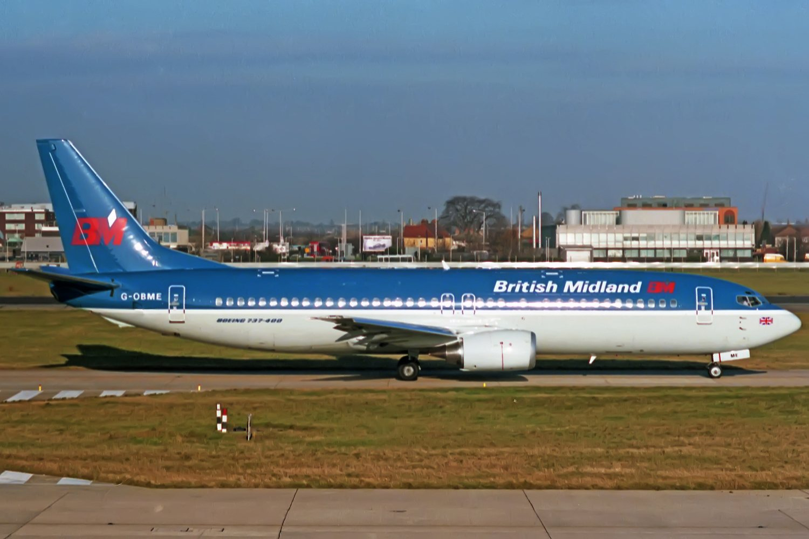
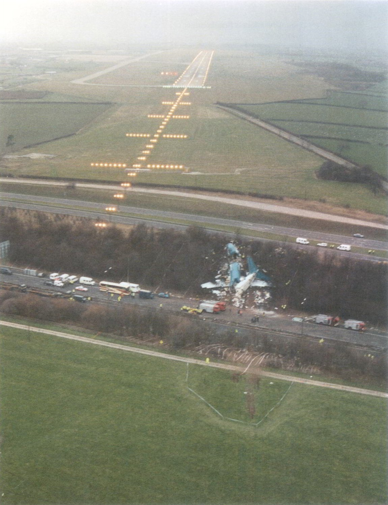
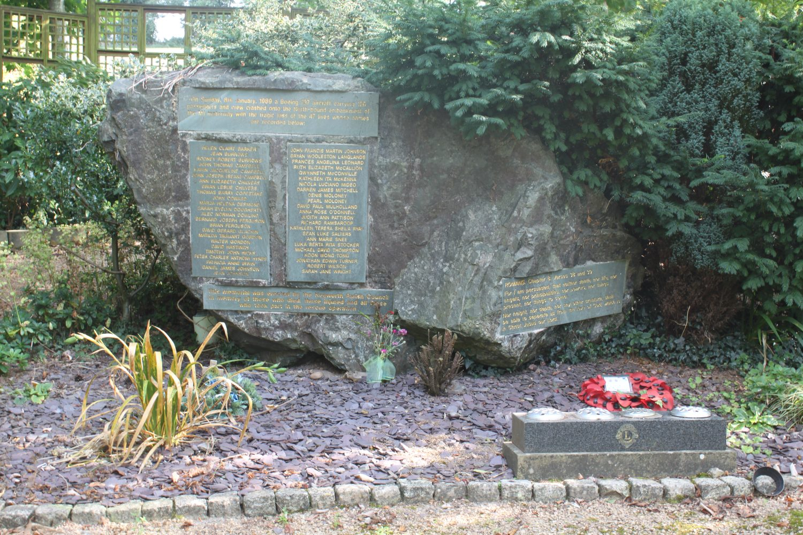

A fan blade broke in the left engine of a nearly new Boeing 737 at 28,300 feet. Smoke came into the cabin, the airframe shook, and two experienced pilots had to work out in a few minutes which of their two engines was destroying itself. They chose the right one. They were wrong, and almost everything about the aeroplane they were sitting in had helped them be wrong. Eight minutes later they came down on the embankment of the M1 motorway with the approach lights of East Midlands Airport laid out in front of the windscreen.
British Midland Flight 92 was the evening Heathrow to Belfast shuttle, a sector so routine that most of the people aboard had flown it before.

On board were 118 passengers and eight crew: 126 people, a large proportion of them travelling home to Northern Ireland. The aircraft was G-OBME, a Boeing 737-4Y0 delivered new to British Midland on 25 October 1988. On the evening of 8 January 1989 it was seventy-four days old.
In command was Captain Kevin Hunt, 43, with 13,200 flying hours. Beside him, First Officer David McClelland, 39, with 3,300. By any normal measure these were experienced professionals.
The measure that mattered was different. Hunt had 23 hours on the 737-400. McClelland had 53. The -400 was new — new engines, new flight deck, new instrument displays — and at the time of the accident no flight simulator for the variant existed anywhere in Britain. Both men had converted onto the type by a one-day course and reading. Neither had ever practised an engine failure in this aeroplane, because there was nowhere to practise one.
Climbing through 28,300 feet, a single fan blade in the left engine fractured.
The CFM56-3C turbofan on the 737-400 was an uprated version of an engine with an excellent record. What nobody knew was that at the higher power settings the -400 used, the fan blades could enter a destructive aerodynamic flutter. The engine had been certified on the basis of laboratory testing. It had never been flight-tested at those settings.
When the blade let go, the aircraft shook hard. Smoke and the smell of burning entered the cabin and the flight deck. The passengers felt a violent vibration and saw the cabin fill with haze. Some of them, seated on the left, could see flames coming out of the left engine — information that, exactly as at Air Florida 90, never reached the two people who needed it.
The crew had a shaking aeroplane, smoke in the air, and a decision to make about which of two engines was trying to kill them. The instruments in front of them were a new type of electronic display, smaller and less familiar than the round dials both men had spent their careers reading. Nobody in the cockpit could see either engine from where they sat.
First Officer McClelland said the trouble was with the left engine. Captain Hunt asked him to repeat it. McClelland said “It's the le… it's the right one.” Hunt ordered the right engine throttled back, then shut down.
Why did two competent pilots settle on the wrong engine? The reason usually given — that the 737-400's air conditioning drew from the right engine, so smoke from a left-engine failure appeared to come from the right side — is close to the truth but has it backwards, and the real version is more instructive.
On earlier 737 variants, the bleed air feeding the flight deck's conditioning came from the right engine. Captain Hunt had learned the aircraft that way. But the 737-400 had been redesigned to draw from both engines, and neither pilot knew that this aeroplane was different. So when smoke reached the flight deck, the captain reasoned from a rule that had been true for most of his career and had quietly stopped being true seventy-four days earlier.
This is the cruellest part. When they throttled back the right engine — the good one — the shuddering stopped and the smell began to clear. It looked like proof. It was coincidence: reducing thrust demand meant less unburnt fuel igniting in the damaged left engine's exhaust, so the symptoms eased at the exact moment they took the wrong action. The aeroplane rewarded the error.
With the right engine shut down and the symptoms apparently gone, the crew had every reason to believe they had solved it. They told air traffic control they had an engine problem and requested a diversion. They were cleared to East Midlands Airport, twenty miles ahead.
The left engine — damaged, vibrating, with a broken fan — kept running, and kept them flying, for another twenty minutes.
For most of the descent, Flight 92 looked like an aircraft that had handled an emergency well.
The crew ran the shutdown drill, spoke to their company, and prepared for a single-engine landing — a demanding but entirely survivable manoeuvre that airline pilots train for repeatedly. Captain Hunt made a calm announcement to the cabin explaining that there had been trouble with the right engine and that it had been shut down.
That announcement is one of the most consequential sentences in this case file, and it is covered in The Passengers below.
Throughout the descent the vibration indicator for the left engine was showing a high reading. It was a small display on an unfamiliar panel, it was one number among many, and neither pilot took it in. The AAIB later noted that this indication was available and was not assimilated — and also noted, in the same report, that the instrument in question was poorly sited, poorly designed for rapid interpretation, and had a history of being distrusted by crews because on older aircraft such gauges were often unreliable.
The workload was enormous: a diversion to arrange, an approach to brief, a company to talk to, a cabin to reassure, checklists to run, all on an aeroplane neither of them had flown much. At no point in the descent did anyone tell them the left engine was on fire.
At about 900 feet, two and a half miles from the runway, the crew increased power for final approach. The left engine, asked for thrust for the first time in twenty minutes, destroyed itself.
The fire warning sounded. The engine lost all power. Now they had no engines at all: one shut down by hand, one wrecked. Captain Hunt called for a relight of the right engine — the good one, sitting there windmilling and perfectly capable of running — but a 737 engine takes far longer to spool up from cold than the seconds they had left.
McClelland transmitted a mayday. Hunt told the cabin to prepare for a crash landing. Fifty-two seconds after the left engine failed, the aircraft hit the ground.
The right engine was undamaged, unstarted, and eight seconds of spool-up away from saving everybody on board.
— What was sitting on the wing the whole timeG-OBME struck a field, bounced across the M1 motorway, and slammed into the far embankment, breaking into three sections.
By an extraordinary piece of luck the aircraft crossed the carriageway without hitting a single vehicle. The motorway was busy. The aeroplane came down between the traffic, cleared both carriageways, and buried its nose in the western embankment on the far side.
The fuselage broke in two places. The forward section folded, the tail section separated, and the wreckage came to rest on the slope with the roof of the cabin driven down onto the seats. There was no fire — the fuel tanks stayed largely intact, which is the main reason 79 people came out of it.

That photograph is the case file. The runway is not somewhere over the horizon; it is directly ahead, lit, in line, and close enough that the survivors lying on the embankment could see it. Everyone who has ever looked at this picture has had the same thought, and there is no version of writing about Kegworth that avoids it.
An airliner had crashed onto a motorway embankment in the dark, in January, in the middle of England. The response was shaped entirely by that geography.
Because the wreckage lay against the M1, the first people to reach it were not airport fire crews but motorists who had stopped, and the emergency services of three counties who could drive straight to it. Leicestershire, Nottinghamshire and Derbyshire units converged. The motorway was closed and became the largest casualty clearing station in the country for one night.
Extraction took hours. The cabin roof had come down on the passengers and many survivors were trapped in crushed seat rows, in the cold, in the dark, fully conscious. Fire crews cut people out through the night. Five firefighters were injured doing it. The last survivor was freed several hours after the crash.
Thirty-nine people died at the scene. Eight more died later of their injuries. Of the 79 who lived, all but five were seriously hurt. Twenty-nine of the dead were from Northern Ireland — a single evening flight home that took a recognisable piece out of one community.
The AAIB published Report 4/1990 in August 1990. It is worth being precise about what it found, because this case is often summarised in two opposite and equally wrong ways: that the pilots were incompetent, or that the pilots were blameless.
It found their actions causal. The Board concluded that the crew shut down the No. 2 engine when the No. 1 engine was the damaged one, that they reacted to the emergency before they had properly diagnosed it, and that they did not assimilate the engine instrument indications available to them. Anyone telling you the investigation cleared the flight crew has not read it. That finding is in the report and it is unambiguous.
Having established that, the report spent most of its length explaining why two capable pilots would do such a thing — and the answer was almost entirely about the system around them. Twenty-three hours on type. No simulator in the country. A conversion course measured in hours. An engine certified without flight testing at the power settings that broke it. A vibration gauge that was hard to read and that crews had been taught by experience to distrust. A cabin full of people who could see the answer and no procedure that would carry it forward. Thirty-one safety recommendations followed, and they are overwhelmingly about equipment, certification and training rather than about pilots trying harder.
The textbook version of this accident is a confirmation bias case: form a hypothesis, then read the evidence to fit it. That is fair as far as it goes, but it understates the problem. When the crew acted on their wrong hypothesis, the symptoms genuinely improved. They were not ignoring contradictory evidence — they were receiving false confirming evidence, produced by the physics of the failure itself. There is no amount of professional discipline that turns that into an easy call.
Kegworth is the case that changed how the industry talks about error, because it is very hard to look at and come away wanting to blame someone. The chain runs: an engine certified on incomplete testing, fitted to an aircraft type crews had barely flown, with instruments they could not read quickly, in an airline system that had converted them onto it in a day, with a cabin that had the answer and no route to the flight deck. Remove any one link and 47 people live. That is what a systemic accident looks like, and Kegworth is the example the textbooks reach for.
Several people in the cabin knew which engine was broken. They could see it. The information never made it seventy feet forward to the two men who needed it.
Passengers seated behind the wing on the left side watched unburnt fuel igniting in the left engine's exhaust — visible flame, unmistakable. At least three cabin crew saw it too.
Then Captain Hunt made his announcement: there was trouble with the right engine, and it had been shut down. In the cabin, people who had just watched the left engine burning heard the captain say right.
Almost nobody said anything. The reasons given afterwards, by survivors and by cabin crew, are consistent and entirely human: they assumed the flight deck knew more than they did; they assumed the pilots had instruments that told them things passengers could not see; some assumed they had misheard, or misremembered which side was which; and the cabin crew who had seen the flames assumed the pilots already knew, because how could they not.
The people with the missing piece of information all independently concluded that the people who needed it must already have it.
— The communication failure at the heart of the caseThis is not a story about passengers who failed to speak up. It is a story about an industry that had built no channel for that information to travel and no expectation that it ever would. Nothing in the training, the procedures or the culture of 1989 told a flight attendant that what they had seen out of a window was operational intelligence the captain might lack. Kegworth is the accident that changed that.
Thirty-one recommendations came out of Report 4/1990, and the ones that mattered most were about people talking to each other.
Kegworth is the accident most often credited with pushing cabin crew properly into CRM training across the industry. The principle that a flight attendant who has seen something must report it, and that a flight deck must create the conditions for that to happen, is a direct descendant of what did not happen on this aircraft.
The CFM56-3C had been certified without flight testing at the power settings that caused the blade to flutter. The recommendations required in-flight testing of newly designed or significantly uprated turbofans. The remaining 737-400 fleet was grounded and the engines modified.
The report was scathing about the new electronic engine displays — their size, their siting and how hard they were to interpret at a glance under stress. The work that followed on engine instrument presentation and on vibration indication changed how these displays are designed and where they are put.
Research into how the occupants of this aircraft were injured led directly to revised brace position guidance issued in 1993, and to changes in seat and floor strength requirements. The brace position on the card in your seat pocket is the one derived from studying what happened to the people on this embankment.
Captain Hunt and First Officer McClelland both survived. Both were seriously injured; Hunt very badly. Both were dismissed by British Midland. Both have lived the rest of their lives inside the most-studied eight minutes in British aviation, and the profession's judgement of them has softened considerably over three decades as the systemic picture has become the standard way of reading the accident.
A memorial stands at the top of Kegworth cemetery on Whatton Road, engraved with the names of the 47. Services are held there on the anniversary, and survivors and families still come. The village of Kegworth, which had an airliner land on its doorstep on a Sunday evening, has carried the name of the disaster ever since.

29 of them from Northern Ireland
Named on the stones at Whatton Road.
Short of the paved runway
The lights were on. They could see them.
Every fact in this case file was cross-referenced against at least two independent sources, anchored by the official government investigation. All links open in a new tab.
The Air Accidents Investigation Branch's complete final report, containing the causal findings, the full analysis of the crew's diagnosis, the engine examination and all 31 safety recommendations.
The AAIB's own catalogue entry for the investigation, with the report and its appendices.
The BBC on the anniversary service at St Andrew's Church, Kegworth, and the community that has carried the name.
Survivor and family accounts, including from Northern Ireland, which lost 29 of the 47.
Used for the crew flight-hour records, the injury breakdown and the distances from the runway, each cross-checked against the AAIB report.